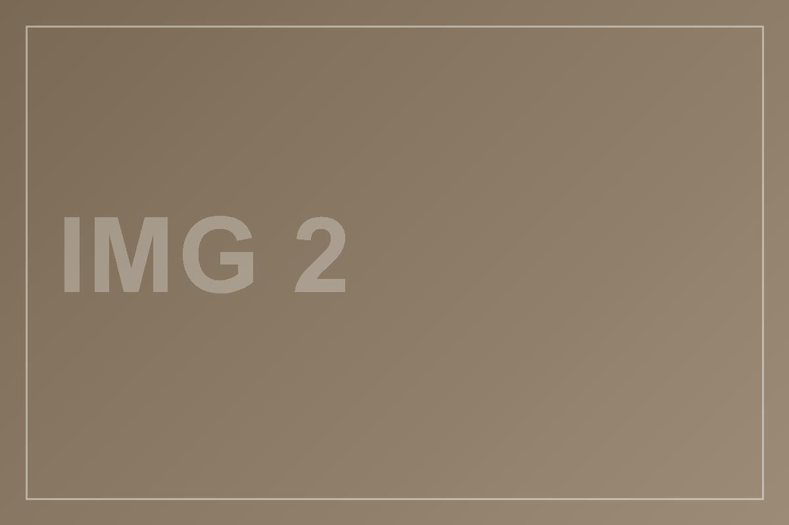
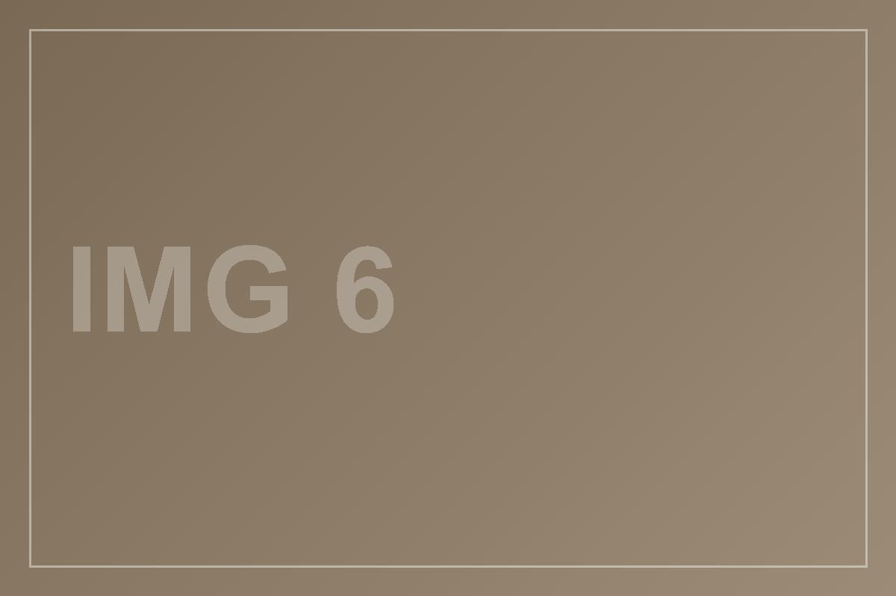
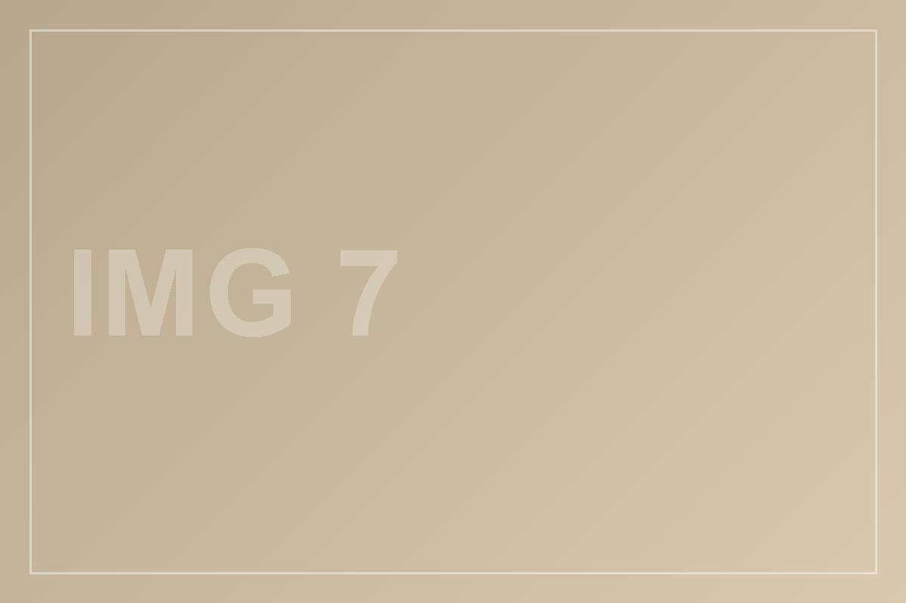
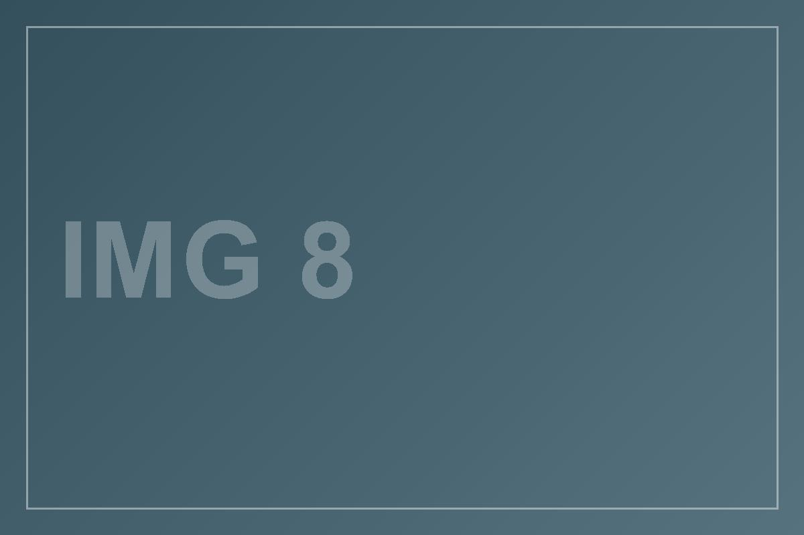
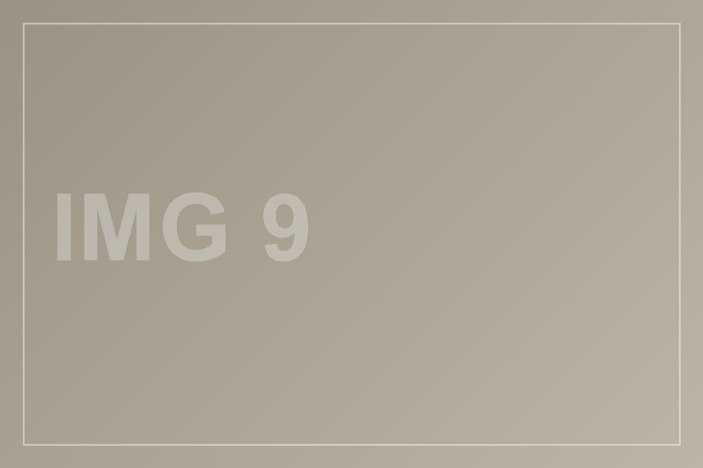
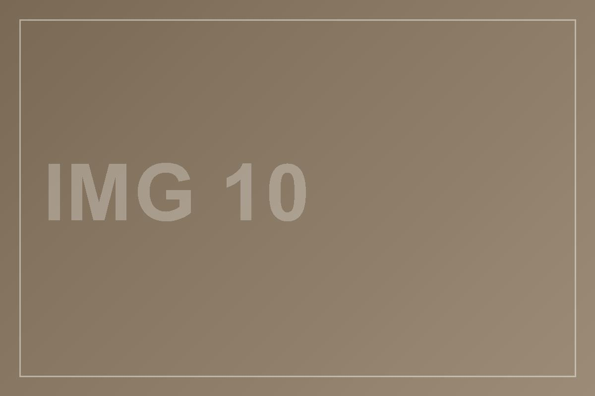

铲痕档案 / SCRAPE SURVEY · 第玖卷
同一面墙，铲开九处，露出不同年份
这面墙被反复覆盖过。我们只铲开九处，不铲平——每一处断口都露着两到四层，层与层之间夹一线旧石灰的白。年份从层数读，不从标签读。
本卷
开口 9 处 · 3/2/2/1/1
图片 10 幅
斜痕 62° · 宽 2px
索引条 96px
编号 01—09 连续
图 00 · 整墙九处，自左至右按年份推进
011953 · 4 层
白灰底下是青砖
1953石灰浆，掺草筋，铲口发白。
1948纸筋灰，贴得极牢。
1936青砖，砖缝尚湿。
1929夯土，铲到此为止。
九处里最深的一刀，再往下就是地基。

01-A · 断口
021961 · 3 层
绿漆下面压着报纸
1961调和漆，豆绿，边上起皮。
1957旧报纸，字迹朝里。
1954水泥砂浆，颗粒细。
报纸最薄，铲刀一过就碎。
02-A · 漆层
031968 · 2 层
标语盖住一块门牌
1968红漆字，笔画边缘有流淌。
1959搪瓷门牌，蓝底白字。
只两层，但最清楚。红漆下的字没有铲。
03-A · 门牌
041974 · 3 层
水泥里嵌着一段铁丝
1974水泥抹面，机器抹的，敲上去发闷。
1969铁丝网，锈成一条褐线，露头三厘米。
1962旧砖墙，砖面被凿过，留着凿痕。
铁丝不能拔，一拔整块抹面会塌，我们把它留作这一处的标记。
04-A · 铁丝
051979 · 2 层
一层白，一层更白
1979乳胶漆，可水洗，边上有一道擦痕。
1971大白粉，遇水即化，铲口呈粉状。
两层颜色差得极少，只有斜光下才看得出边界。

05-A · 斜光
061983 · 4 层
四次翻修压在一处
1983涂料，米黄，滚涂，留下桔皮。
1978墙纸，只余一条窄边，花纹是斜格。
1972纸筋灰，夹着一根稻草。
1965砖，最里，砖棱已经磨圆。
层线最密的一处，四条白线在十厘米内排开。

06-A · 断面
071988 · 3 层
广告字被铲掉一半
1988喷绘，红底白字，铲口呈锯齿。
1984水泥漆，附着力差，一揭一片。
1976石灰，最底，颜色发暖。
锯齿是铲刀角度造成的，不是画上去的，我们保留了它。

07-A · 锯齿
081992 · 2 层
第八处 · 只铲了一铲就停，一掌宽
1992乳胶漆，新，白得发亮。
1986旧涂层，偏黄，与上一层差一档。
这一处面积最小，只有一掌宽。留着，是为了不把整面墙铲完。

08-A · 一掌宽
091997 · 2 层
第九处 · 最浅的一处，也是最晚
1997外墙涂料，雨渍已经渗进来。
1993底漆，薄，几乎看不出厚度。
九处到此为止。再往下铲，墙就不是这面墙了。

09-A · 最浅